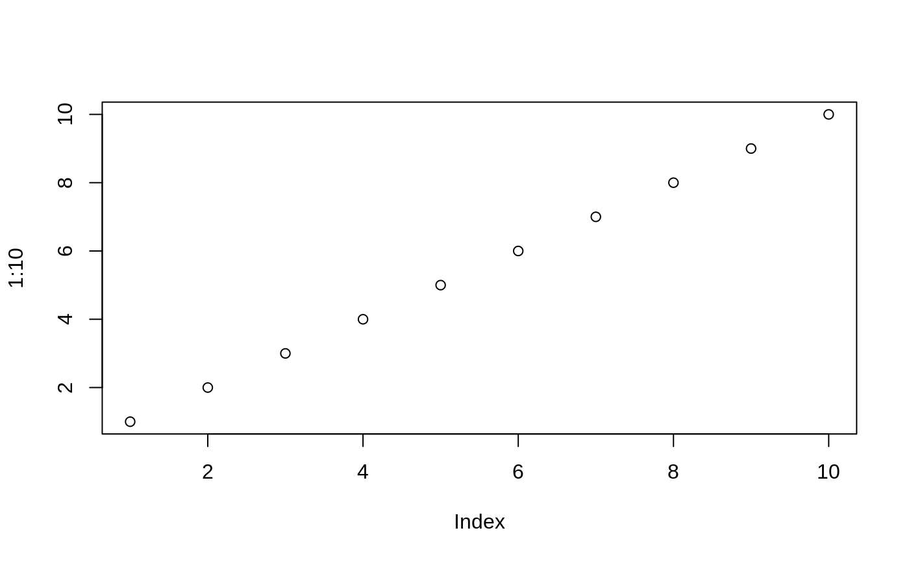
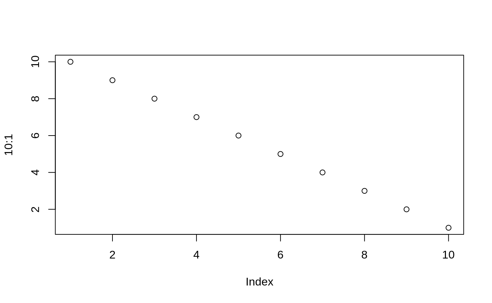

vignettes/flusshygiene.Rmd
flusshygiene.RmdThe work on this package and its functions were mainly done inside the FLUSSHYGIENE project at Kompetenzzentrum Wasser Berlin gGmbH. Visit [KWB][] and FLUSSHYGIENE for further details. [KWB]: http://www.kompetenz-wasser.de/en/project/flusshygiene/ FLUSSHYGIENE: https://bmbf.nawam-rewam.de/en/projekt/flusshygiene/
Aim of the project is the better understanding of urban river system hygiene. Due to undisinfected treated waste water outlet, combined sewer overflows while heavy rain or flushing of contaminated seperated sewer outlets while light rain, urban rivers tend to be critical water bodies in respect of bathing water quality.
One of the key concepts which has been developed during the project phase is the usage of bayesian linear modelling to predict bathing quality of urban runoff bathing sites. In line with the EU directive it is now possible to predict the distribution of the target value (the E.Coli concentration) on a daily basis. The uncertainty is mirrored in the variance of this distribution and the bathing quality assessment will be derived through the 90th and 95th quantile. That way the decision for a bathing ban is done on a daily basis and can be predicted in the morning when some criterias are met.
A bayesian multivariate linear model is set up via the following regressors: - the flow rate Q (mean value per day) - the precepitation amount (daily sum) - the amount of treated waste water in the runoff (daily sum)
Vignettes are long form documentation commonly included in packages. Because they are part of the distribution of the package, they need to be as compact as possible. The html_vignette output type provides a custom style sheet (and tweaks some options) to ensure that the resulting html is as small as possible. The html_vignette format:
Note the various macros within the vignette section of the metadata block above. These are required in order to instruct R how to build the vignette. Note that you should change the title field and the \VignetteIndexEntry to match the title of your vignette.
The html_vignette template includes a basic CSS theme. To override this theme you can specify your own CSS in the document metadata as follows:
output:
rmarkdown::html_vignette:
css: mystyles.cssThe figure sizes have been customised so that you can easily put two images side-by-side.

You can enable figure captions by fig_caption: yes in YAML:
output:
rmarkdown::html_vignette:
fig_caption: yesThen you can use the chunk option fig.cap = "Your figure caption." in knitr.
You can write math expressions, e.g. \(Y = X\beta + \epsilon\), footnotes1, and tables, e.g. using knitr::kable().
| mpg | cyl | disp | hp | drat | wt | qsec | vs | am | gear | carb | |
|---|---|---|---|---|---|---|---|---|---|---|---|
| Mazda RX4 | 21.0 | 6 | 160.0 | 110 | 3.90 | 2.620 | 16.46 | 0 | 1 | 4 | 4 |
| Mazda RX4 Wag | 21.0 | 6 | 160.0 | 110 | 3.90 | 2.875 | 17.02 | 0 | 1 | 4 | 4 |
| Datsun 710 | 22.8 | 4 | 108.0 | 93 | 3.85 | 2.320 | 18.61 | 1 | 1 | 4 | 1 |
| Hornet 4 Drive | 21.4 | 6 | 258.0 | 110 | 3.08 | 3.215 | 19.44 | 1 | 0 | 3 | 1 |
| Hornet Sportabout | 18.7 | 8 | 360.0 | 175 | 3.15 | 3.440 | 17.02 | 0 | 0 | 3 | 2 |
| Valiant | 18.1 | 6 | 225.0 | 105 | 2.76 | 3.460 | 20.22 | 1 | 0 | 3 | 1 |
| Duster 360 | 14.3 | 8 | 360.0 | 245 | 3.21 | 3.570 | 15.84 | 0 | 0 | 3 | 4 |
| Merc 240D | 24.4 | 4 | 146.7 | 62 | 3.69 | 3.190 | 20.00 | 1 | 0 | 4 | 2 |
| Merc 230 | 22.8 | 4 | 140.8 | 95 | 3.92 | 3.150 | 22.90 | 1 | 0 | 4 | 2 |
| Merc 280 | 19.2 | 6 | 167.6 | 123 | 3.92 | 3.440 | 18.30 | 1 | 0 | 4 | 4 |
Also a quote using >:
“He who gives up [code] safety for [code] speed deserves neither.” (via)
A footnote here.↩